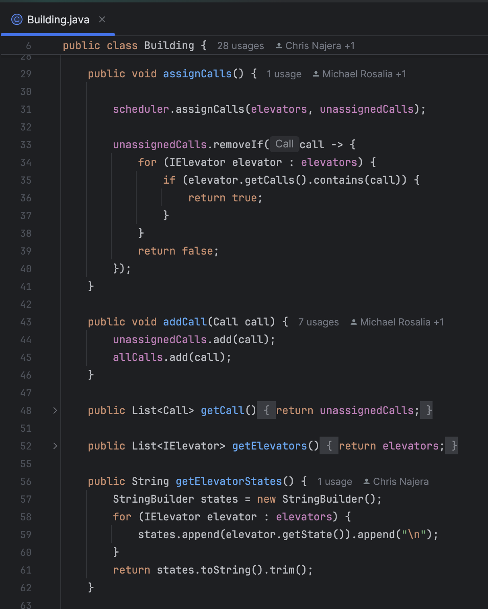
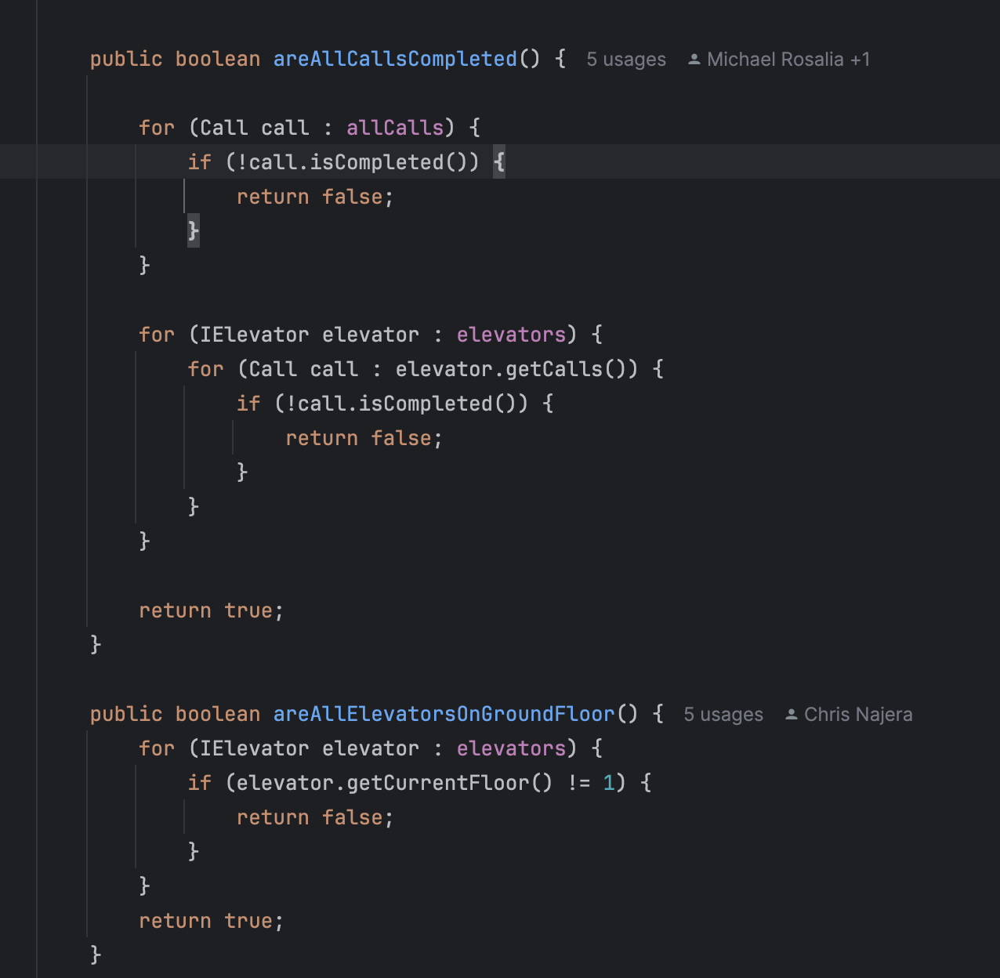
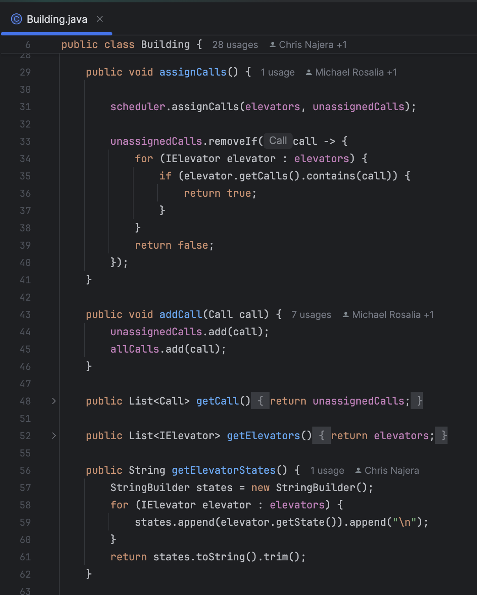
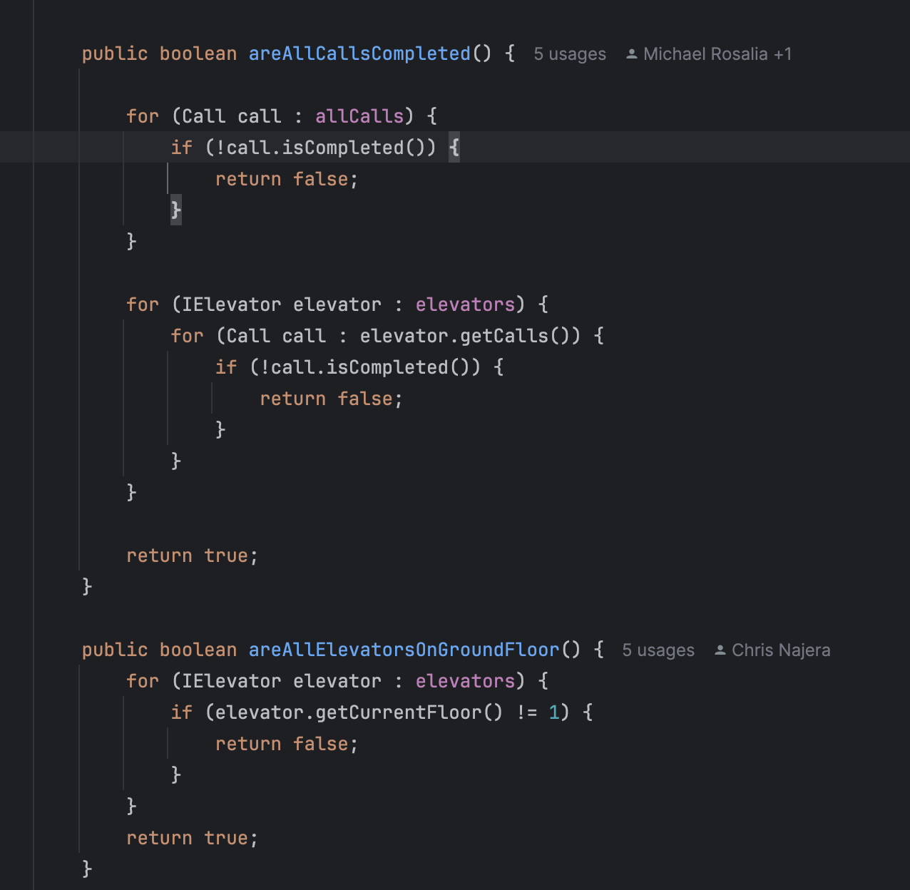

About Me
Hi, my name is Chris Najera, and I am currently a student at University of San Diego studying Computer Science. I was born in Sacramento, California, but grew up in Davis, California. I have a passion for sports, music, technology, and I enjoy working on creative coding projects such as this website!
Professional Experience
I am currently pursuing a degree in Computer Science, and along the way, I have worked with multiple programming languages including C, Java, Python, HTML/CSS, and JavaScript. My main interests are web development, software engineering, app development, and AI.
Hobbies & Interests
Outside of programming, I love playing basketball, watching sports, hanging out with friends and family, going to the gym, and playing video games. An interesting fact about me is that I played the violin for six years when I was younger.
Projects


Birthday Paradox Simulation
What is the Birthday Paradox? The Birthday Paradox is a well-known probability problem that states if you have a group of 23 people, there is a 50% chance that two of them will share the same birthday.
What does this project do? This project simulates the Birthday paradox by randomly generating birthdays for different group sizes, ranging from 5 to 100 people in increments of 5. Each group undergoes 20 trials, and the program calculates the percentage of trials where at least two people share the same birthday. The results are displayed to show how the probability increases as the group size grows.
Functional Requirements
- Generates random birthdays while ensuring validity (Example: no February 30th).
- Simulates groups of 5 to 100 people in increments of 5.
- Runs 20 trials per group size to compute the probability of shared birthdays.
- Uses a single Random object to ensure consistent seeding.
- Outputs results in a structured table format.
Implementation Details (My Contribution)
- Implemented the Experiment.java class for trial control and statistics gathering.
- Developed the Trial.java class to simulate individual birthday matching.
- Wrote unit tests in TrialTest.java using JUnit and Mockito.
- Used test-driven development to ensure correctness before implementation.
This project helped me improve my Java coding and debugging skills, and become more confident in using JUnit and GitHub for team collaboration.
Check out the full project on GitHub: GitHub Repo
 





Elevator Simulation Project
Project Title: Elevator Simulator
This project simulates multiple types of elevators servicing a building. Types include Standard, Freight, Penthouse, and Express elevators, each with distinct logic. The simulation runs in rounds, assigning calls and moving elevators floor by floor using two scheduling algorithms.
Functional Requirements:
- Basic Simulator Mechanics:
- Loads calls from a file.
- Creates elevators with proper types and quantities.
- Assigns calls to elevators using the Scheduler.
- Moves elevators one floor per round.
- Correct Call Assignment:
- Follows algorithmic logic (Simple or Complex).
- Respects elevator type constraints.
- Elevator Call Processing:
- Pickups at start floor, drops off at destination.
- Tracks call completion.
- Termination Condition:
- All calls must complete and elevators return to ground floor.
- Output Accuracy:
- Shows current elevator status.
- Displays pending and completed calls clearly.
Implementation Details (My Contribution)
- Built the
Simulatorcore class to manage the flow and ending condition. - Implemented
ComplexSchedulerandSimpleSchedulerfor dispatching. - Wrote the
Buildingclass to manage elevator list and call assignment. - Worked on the
Callclass to represent individual elevator requests. - Used test-driven development and GitHub-based pair programming.
What I Learned:
This project deepened my understanding of TDD, Java design, and collaborative Git workflows. It gave me confidence in writing large simulations and debugging with a partner.
Check out the full project on GitHub: GitHub Repo